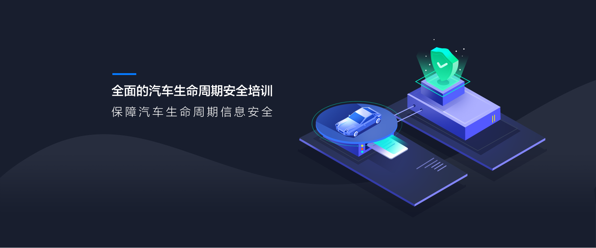
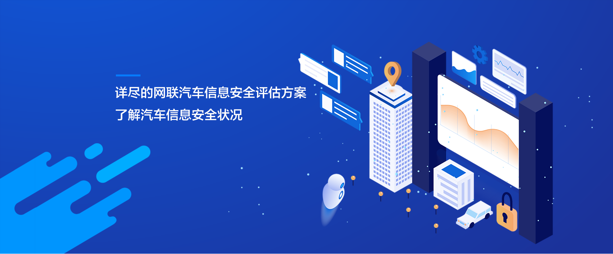
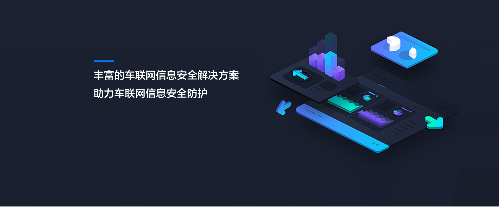
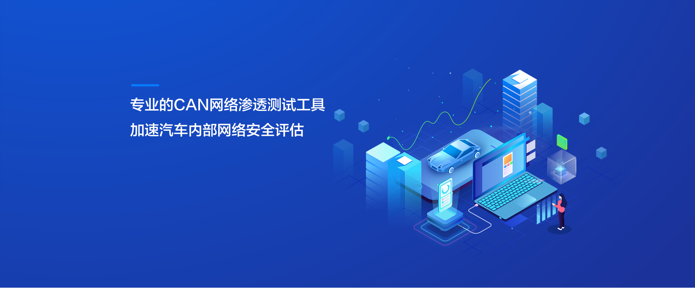
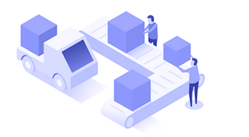
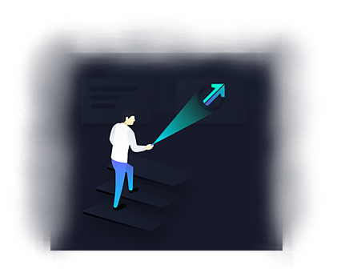

| 车联网安全
培训
(current)
测试
解决方案
产品




Previous
Next
培训
SAE J3061培训
深入解读SAE J3061 信息安全流程框架， 根据指南制定符合自身实际情况的信息安全流程， 保证车联网产品设计、开发、测试、运营及管理等涉及产品全生命周期的信息安全， 减少信息安全威胁。
Web安全培训
基于车联网云端平台的信息安全培训， 深入了解云端平台漏洞风险及相关防护手段， 构建更为安全可靠的车联网云端服务平台。
威胁分析与风险评估培训
深入理解威胁分析模型与风险评估体系及相关评估流程， 根据自身实际构建合适的威胁分析和风险评估体系， 了解车联网产品面临的安全风险，防患于未然。
测试

渗透测试
针对汽车可能面临的信息安全风险，对汽车关键模块例如IVI、 网关、T-BOX、ECU、CAN网络等进行包括模糊测试、硬件测 试、软件分析、通信测试等一系列信息安全测试。通过丰富 的测试用例对汽车信息安全进行检测并出具风险评估报告， 为建立有效的信息安全防护体系提供依据。
验证测试
依据国际及行业相关信息安全标准对汽车安全功能进 行检测，通过全生命周期的有效检测确保产品全生命 周期的安全功能得以实现，符合相关国内外标准。
威胁分析与风险评估
根据数据CIA模型和相关威胁分析方法构建全面的威胁分析模型，确认 资产、识别威胁、进行脆弱性分析。针对资产，确定其面临的威胁， 通过预设攻击场景对相关威胁进行分级，根据攻击概率和威胁严重程度 确定面临的安全风险等级，为采取响应的信息安全防护手段提供参考。
解决方案
EAL
信息安全
EAL信息安全认证服务
EAL信息安全认证服务
深入解读SAE J3061 信息安全流程框架， 根据指南制定符合自身实际情况的信息安全流程， 保证车联网产品设计、开发、测试、运营及管理等涉及产品全生命周期的信息安全，减少信息安全威胁。
OTA
安全防护
OTA安全防护方案
OTA安全防护方案
基于车联网云端平台的信息安全培训， 深入了解云端平台漏洞风险及相关防护手段， 构建更为安全可靠的车联网云端服务平台。
CAN
网络信息
CAN网络信息安全防护方案
CAN网络信息安全防护方案
深入理解威胁分析模型与风险评估体系及相关评估流程， 根据自身实际构建合适的威胁分析和风险评估体系， 了解车联网产品面临的安全风险，防患于未然。
EAL
网络安全
CAN网络信息安全评估方案
CAN网络信息安全评估方案
深入解读SAE J3061 信息安全流程框架， 根据指南制定符合自身实际情况的信息安全流程， 保证车联网产品设计、开发、测试、运营及管理等涉及产品全生命周期的信息安全，减少信息安全威胁。
安全数据
中心
车联网安全数据中心
车联网安全数据中心
基于车联网云端平台的信息安全培训，深入了解云端平台漏洞风险及相关防护手段，构建更为安全可靠的车联网云端服务平台。
通信安全
防护
车联网通信安全防护
车联网通信安全防护
深入理解威胁分析模型与风险评估体系及相关评估流程， 根据自身实际构建合适的威胁分析和风险评估体系， 了解车联网产品面临的安全风险，防患于未然。
产品
CAN网络自动测试工具可以对CAN网络自动化信息安全测试，测试范围包括，CAN网络探测，指令逆向，诊断服务，CAN 通信， ECU安全等多个方面。依据测试结果和测试标准，出具信息安全测试报告，对汽车CAN网络信息安全进行分析，并给出建议
